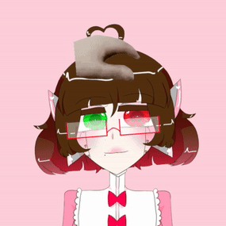

welcome to l'atelier!
♡ v-streaming ♡
oshi mark: 💌
fan name: nonsensicals
contact e-mail: dellanonsense@gmail.com

hello! I'm a (current on hitus) vartist who hopes to stream again! I mainly focus on illustrations and drawing, but also play some games!
my streams are 18+ because of topics and language. please respect that!
♡ hastags ♡
TBA!
♡ currently all assets (model, overlays, alerts, etc.) are made by me! ♡
♡ I also rigged my own model! (no live2d questions pls) ♡
♡ lore ♡
l’aetlier was a laboratory studying cyber-organic mutations, lead by a scientist and his church-appointed assistant. she was an android named della.
overtime, the cold android felt the experiments were wrong; in return, the scientist she trusted most made her a test subject.
as l’atelier rotted, and everyone left, della remained in her mangled, distorted state.
she was doomed to eventually go offline and be one of the other desecrated bodies, until with a burst of pink light- all of l’atelier disappeared.
now there are rumors of a chapel wandering the void. some say it used to be a laboratory. android nuns walk the halls and chambers seeking art, music, stories and expression. all of them bearing a striking resemblance to the scientist’s assistant, della.
the “della” you see is one such android.